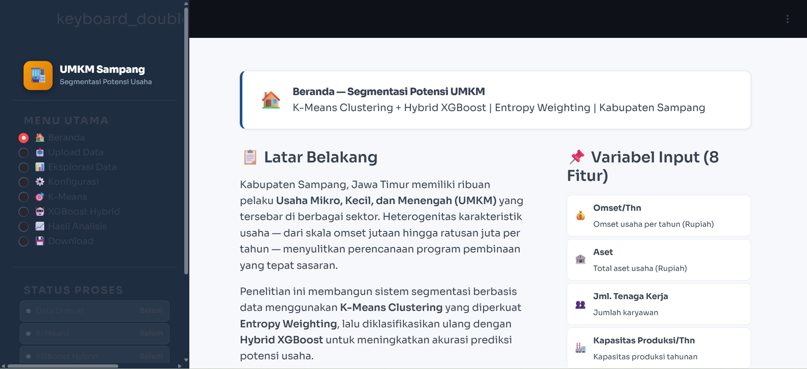

Sistem klasifikasi cerdas untuk pemetaan dan perencanaan program pembinaan UMKM yang tepat sasaran di Kabupaten Sampang.

Kabupaten Sampang, Jawa Timur memiliki ribuan pelaku Usaha Mikro, Kecil, dan Menengah (UMKM) yang tersebar di berbagai sektor. Heterogenitas karakteristik usaha — dari skala omset jutaan hingga ratusan juta per tahun — menyulitkan perencanaan program pembinaan yang tepat sasaran. Sistem ini dibangun sebagai solusi berbasis data untuk memecahkan masalah tersebut dengan memetakan potensi masing-masing usaha secara otomatis.
Data Scientist & Developer — Bertanggung jawab dalam seluruh proses analisis data, mulai dari pemrosesan data, perancangan model Machine Learning, hingga penerapan (deployment) antarmuka dasbor interaktif yang berjalan melalui tunneling.
Aplikasi ini berjalan secara cloud-based menggunakan Google Colab yang diekspos melalui layanan Grok/Ngrok, dan memiliki menu utama interaktif yang mencakup fitur-fitur berikut: